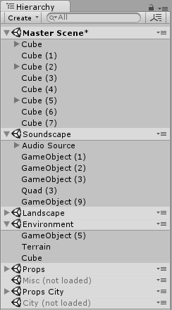
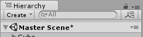
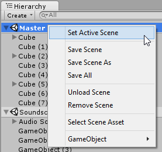
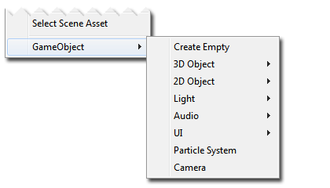
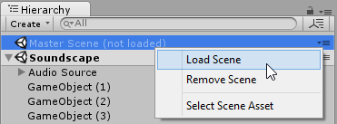
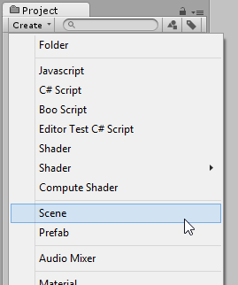

Multi-Scene editing
Multi Scene Editing allows you to have multiple scenes open in the editor simultaneously, and makes it easier to manage scenes at runtime.
The ability to have multiple scenes open in the editor allows you to create large streaming worlds and improves the workflow when collaborating on scene editing.
This page describes:
- The multi scene editing integration in the Editor
- The Editor scripting and the Runtime scripting APIs
- Current known issues
In the editor
To open a new scene and add it to the current list of scenes in the Hierarchy, either select Open Scene Additive in the context menu for a scene asset, or drag one or more scenes from the Project window into the Hierarchy Window.

When you have multiple scenes open in the editor, each scene's contents are displayed separately in the hierarchy window. Each scene's contents appears below a scene divider bar which shows the scene's name and its save state.

While present in the hierarchy, scenes can be loaded or unloaded to reveal or hide the gameobjects contained within each scene. This is different to adding and removing them from the hierarchy window.
The scene dividers can be collapsed in the hierarchy to the scene's contents which may help you to navigate your hierarchy if you have lots of scenes loaded.
When working on multiple scenes, each scene that is modified will need its changes saved, so it is possible to have multiple unsaved scenes open at the same time. Scenes with unsaved changes will have an asterisk shown next to the name in the scene divider bar.

Each Scene can be saved separately via the context menu in the divider bar. Selecting "Save Scene" from the file menu or pressing Ctrl/Cmd + S will save changes to all open scenes.
The context menu in the scene divider bars allow you to perform other actions on the selected scene.
The Scene divider menu for loaded Scenes

-|- Set Active Scene| This allows you to specify which scene new Game Objects are created/instantiated in. There must always be one scene marked as the active scene Save Scene| Saves the changes to the selected scene only. Save Scene As| Saves the selected scene (along with any current modifications) as a new Scene asset. Save All| Saves changes to all scenes. Unload Scene| Unloads the scene, but keeps the scene in the Hierarchy window. Remove Scene| Unloads and removes the scene from the Hierarchy window. Select Scene Asset| Selects the scene's asset in the Project window. GameObject| Provides a sub-menu allowing you to create GameObjects in the selected scene. The menu mirrors the creatable items available in Unity's main GameObject menu. (shown below)

The Scene divider menu for unloaded Scenes:

-|- Load Scene| Loads the scene's contents Remove Scene| Remove the scene from the Hierarchy window. Select Scene Asset| Selects the scene's asset in the Project window.
Baking Lightmaps with multiple Scenes
To bake Lightmap data for multiple scenes at once, you should open the scenes that you want to bake, turn off "Auto" mode in the Lighting Window, and click the Build button to build the lighting.
The input to the lighting calculations is the static geometry and lights from all scenes. Therefore shadows and GI light bounces will work across all scenes. However, the lightmaps and realtime GI data are separated out into data that is loaded / unloaded separately for each scene. The lightmaps and realtime GI data atlases are split between scenes. This means lightmaps between scenes are never shared and they can be unloaded safely when unloading a scene. Lightprobe data is currently always shared and all lightprobes for all scenes baked together are loaded at the same time.
Alternatively, you can automate building lightmaps for multiple scenes by using the Lightmapping.BakeMultipleScenes function in an editor script.
Baking Navmesh data with multiple Scenes
To make Navmesh data for multiple scenes at once, you should open the scenes that you want to bake, and click the Bake button in the Navigation Window. The navmesh data will be baked into a single asset, shared by all loaded scenes. The data is saved into the folder matching the name of the current active scene (e.g. ActiveSceneName/NavMesh.asset). All loaded scenes will share this navmesh asset. After baking the navmesh, the scenes affected should be saved to make the scene-to-navmesh reference persistent.
Alternatively, you can automate building navmesh data for multiple scenes by using the NavMeshBuilder.BuildNavMeshForMultipleScenes function in an editor script.
Baking Occlusion Culling data with multiple Scenes
To bake Occlusion Culling data for multiple Scenes at once, open the Scenes that you want to bake, open the Occlusion Culling window (menu: Window > Rendering > Occlusion Culling) and click the Bake button. The Occlusion data is saved into Library/Occlusion, and a reference to the data is added in each open Scene. After baking the Occlusion Culling, save the Scenes affected to make the Scene-to-occlusion reference persistent.
Whenever a Scene is loaded additively, if it has the same occlusion data reference as the active Scene, the static renderers and portals culling information for that Scene are initialized from the occlusion data. Hereafter, the occlusion culling system performs as if all static renderers and portals were baked into a single Scene.
Play mode
In Play mode, with multiple scenes in the Hierarchy, an additional scene will show up called DontDestroyOnLoad.
Prior to Unity 5.3, any objects you would instantiate in Playmode marked as "DontDestroyOnLoad" would still show up in the hierarchy. These objects are not considered part of any scene but for Unity to still show the objects, and for you to inspect them, these objects are now shown as part of the special DontDestroyOnLoad scene.
You do not have access to the DontDestroyOnLoad scene and it is not available at runtime.
Scene-specific settings
A number of settings are specific to each scene. These are:
- RenderSettings and LightmapSettings (both found in the Lighting Window)
- NavMesh settings
- Scene settings in the Occlusion Culling Window.
The way it works is that each scene will manage its own settings and only settings associated with that scene will be saved to the scene file.
If you have multiple scenes open, the settings that are used for rendering and navmesh are the ones from the active scene. This means that if you want to change the settings of a scene, you must either open only one scene and change the settings, or make the scene in question the active scene and change the settings.
When you switch active scene in the editor or at runtime, all the settings from the new scene will be applied and replace all previous settings.
Scripting
Editor scripting
For editor scripting we provide a Scene struct and EditorSceneManager API and a SceneSetup utility class.
The Scene struct is available both in the editor and at runtime and contains a handful of read-only properties relating to the scene itself, such as its name and asset path.
The EditorSceneManager class is only available in the editor. It is derived from SceneManager and has a number of functions that allow you to implement all the Multi Scene Editing features described above via editor scripting.
The SceneSetup class is a small utility class for storing information about a scene currently in the hierarchy.
The Undo and PrefabUtility classes have been extended to support multiple scenes. You can now instantiate a prefab in a given scene using [PrefabUtility.InstantiatePrefab], and you can move objects to the root of a scene in an un-doable manner using (Undo.MoveGameObjectToScene)[ScriptRef:Undo.MoveGameObjectToScene]
NOTE: To use Undo.MoveGameObjectToScene, you must make sure the GameObject is already at the root of the scene it is currently in.
Runtime scripting
For scripting at Runtime, the functions to work with multiple scenes such as LoadScene and UnloadScene are found on the SceneManager class.
Notes
In the File menu Save Scene As will only save the active scene. Save Scene will save all modified scenes, including prompting you to name the Untitled scene if it exists.

Tips and tricks
It is possible to add a scene to the hierarchy while keeping it its unloaded state by holding Alt while dragging. This gives you the option to load the scene later, when desired.
New scenes can be created using the Create menu in the project window. New scenes will contain the default setup of Game Objects.
To avoid having to set up your hierarchy every time you restart unity or to make it easy to store different setups you can use EditorSceneManager.GetSceneManagerSetup to get a list of SceneSetup objects which describes the current setup. You can then serialize these into a ScriptableObject or something else along with any other information you might want to store about your scene setup. To restore the hierarchy simply recreate the list of SceneSetups and use EditorSceneManager.RestoreSceneManagerSetup.
At runtime to get the list of loaded scenes simply get sceneCount and iterate over the scenes using GetSceneAt.
You can get the scene a GameObject belongs to through GameObject.scene and you can move a GameObject to the root of a scene using SceneManager.MoveGameObjectToScene.
It is recommended to avoid using DontDestroyOnLoad to persist manager GameObjects that you want to survive across scene loads. Instead, create a manager scene that has all your managers and use SceneManager.LoadScene(<path>, LoadSceneMode.Additive) and SceneManager.UnloadScene to manage your game progress.
Known issues
- Cross-Scene references are not supported, and are prevented in Edit mode. In Play mode they are allowed, because Scenes cannot be saved.